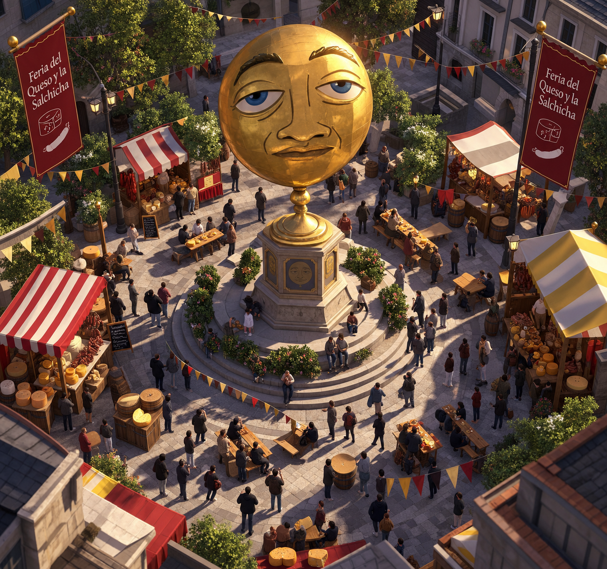
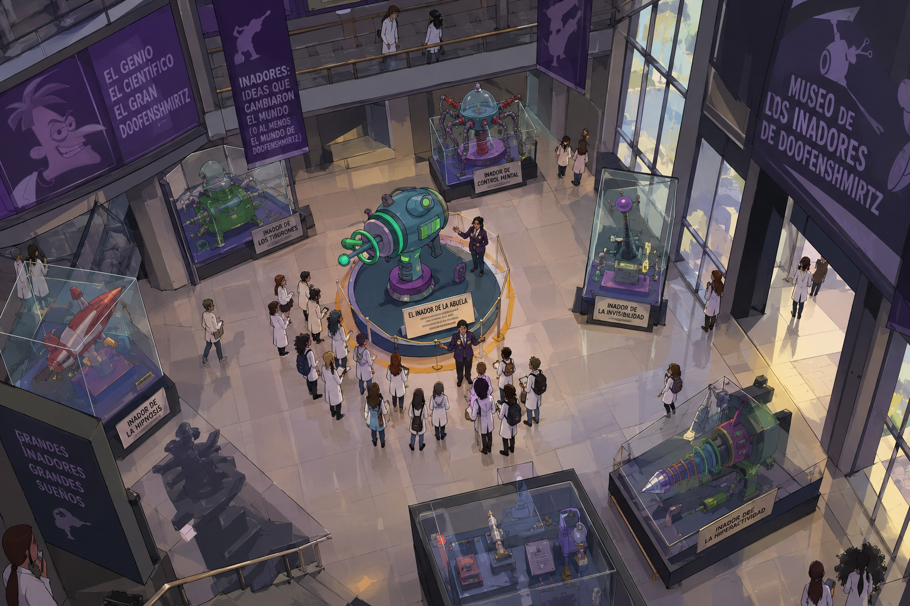
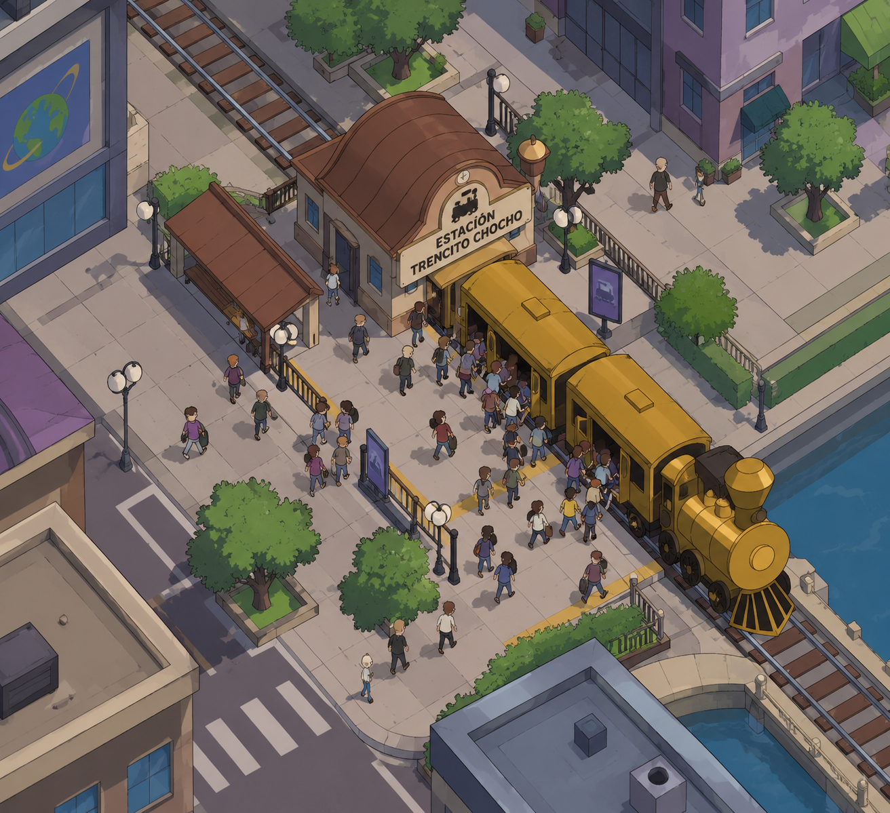

Doofania es una ciudad que se sostiene sobre una cámara de aire (es decir, una ciudad flotante). Eso no significa que no tenga mucho para ofrecer tanto a sus ciudadanos como a los turistas que están de paso.
Por eso, la ciudad invita a turistas de distintas ciudades e incluso países, por decisión del alcalde, a visitar sus tres mayores orgullos y disfrutar de los diversos eventos que se celebran a lo largo del año.
Ballonys Park
El parque central de la ciudad, ubicado en la zona recreativa cerca de la entrada de Doofania.
Inicialmente, se presentó como un sitio de conmemoración del mejor amigo del alcalde, Globito. Sin embargo, los ciudadanos decidieron organizar diversos eventos y actividades en todo el parque.
La feria de quesos
El evento anual más esperado por los ciudadanos y apreciado por el alcalde es la feria de quesos.
La próxima feria de quesos será el día .

¡El Museo-inador!
Tras varios intentos de dominar el área limítrofe, el propio Doofenshmirtz pensó qué uso podría darles a los inadores fallidos. Por eso, reunió los pocos aparatos y proyectos antiguos que conservaba para reconstruirlos y exponerlos con fines científicos.
El museo está cerca del centro de la ciudad, al norte del edificio de M.A., en el área académica.
Información sobre horarios y visitas
Se recomienda la visita a estudiantes y científicos, ya que a veces el propio Doofenshmirtz ofrece visitas guiadas y explica cada uno de sus inadores, desde su creación hasta su destrucción.
El museo está abierto al público de lunes a viernes, de a , excepto los días feriados. La próxima visita de Doofenshmirtz será el .
Inadores en exposición
La casa del mal
Fue el primer edificio que Doofenshmirtz decidió construir y, por eso, fue declarado la «Casa Blanca» de la ciudad y su centro.
Se recomienda visitar el centro de la ciudad porque, al estar ubicado allí, es más fácil acceder a las distintas zonas.
En este lugar solo se celebran eventos privados o públicos si el organizador es el alcalde.
Una vez al año, se celebra públicamente en el edificio de M.A., con ingreso limitado, el cumpleaños de la hija del alcalde, el .

Transporte de Doofania
Si bien Doofania es una ciudad relativamente pequeña y muchos dudan de su estabilidad, Doofenshmirtz nunca opinó lo mismo. Para facilitar el desplazamiento de ciudadanos y turistas, abrió su propia línea de colectivos eléctricos largos, que se caracterizan por tener elementos propios de los trenes.
Los recorridos turísticos suelen realizarse en uno de estos vehículos por su mayor capacidad de transporte.
